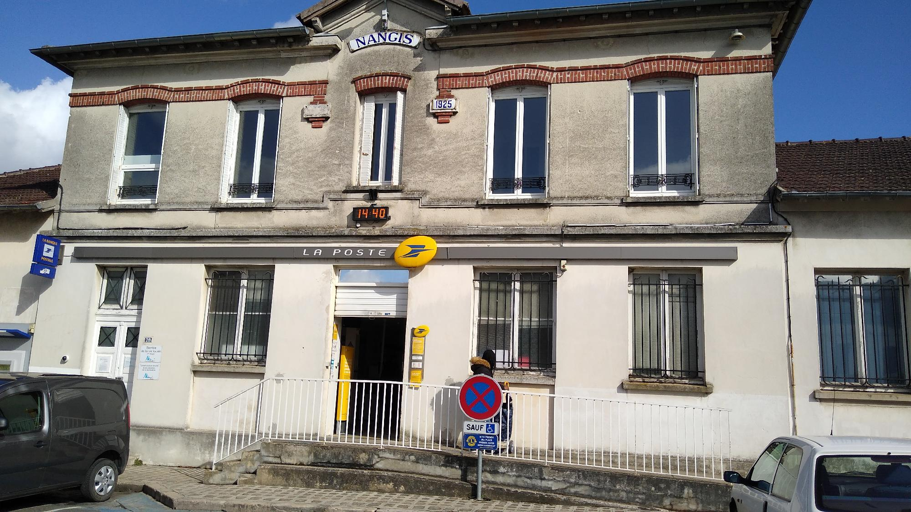
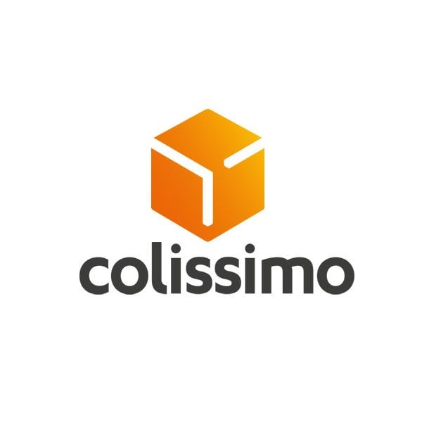
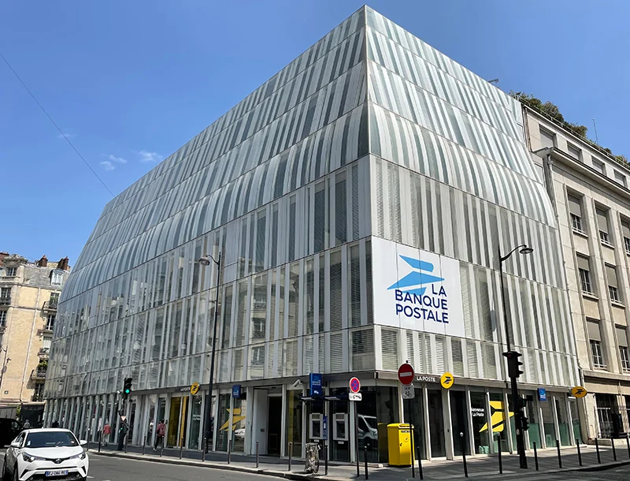
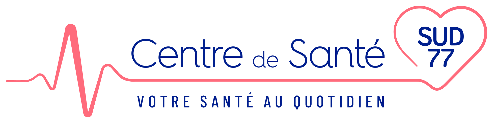
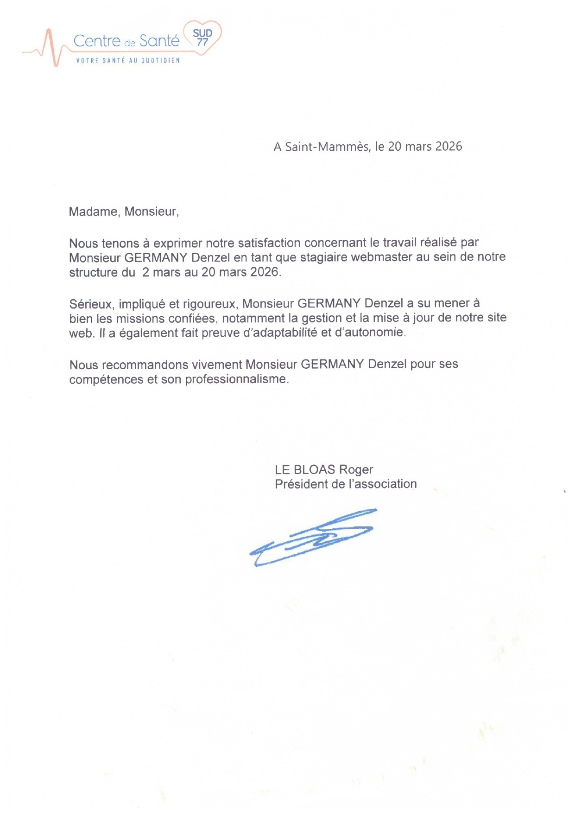

Mon parcours autant professionel que scolaire est riche et variée et continuera de s'enrichir à l'avenir.
Par ailleurs, je suis très heureux et très fier d'avoir eu autant d'expériences positives !
Vous le verrez mon parcours est très variés même si la base principale reste l'informatique (pour mes plus longues expériences) du développement front-end à la masterisation de PC en passant par l'enrôlement de téléphones, je suis tout à fait capable de faire plusieurs choses tel que de l'accueil client, du rangement, etc.
Dans le cadre de ce CDI du samedi à La Poste, je participe aux activités de gestion et de distribution du courrier et des colis. Ce poste m’a permis de développer mon sens de l’organisation, ma ponctualité ainsi que ma capacité à travailler efficacement dans un environnement dynamique.
Mes tâches attribués sont nombreuses :
Tri du courrier et des colis
Préparation des tournées
Gestion des envois et réceptions
Aide au traitement des colis
Respect des délais et procédures
Utilisation des outils de suivi logistique
Travail en coordination avec les équipes du centre courrier

Lors de cette mission d’intérim chez Colissimo, j’ai participé aux activités liées au traitement et à l’acheminement des colis. Ce poste demande de la rigueur, de l’organisation et une bonne capacité d’adaptation afin de respecter les délais de livraison et le rythme de travail en plateforme logistique.
Mes tâches attribués sont nombreuses :
Tri des colis
Chargement et déchargement des marchandises
Organisation des colis selon les destinations
Contrôle des étiquettes et des informations de livraison
Participation à la préparation des expéditions
Respect des consignes de sécurité
Travail en équipe dans un environnement logistique

Durant ce stage de 2 mois, de Mai à Juin 2025 j’ai intégré le service des systèmes d’information au siège de La Banque Postale. Le poste de technicien SI consiste à assurer le bon fonctionnement des outils informatiques et à aider les équipes dans la gestion du matériel et des logiciels utilisés au quotidien. Cette expérience m’a permis de découvrir l’environnement informatique d’une grande entreprise et le travail dans un service technique.
Mes tâches attribués sont nombreuses :
Assistance informatique auprès des collaborateurs
Installation et configuration de postes informatiques
Vérification du matériel informatique
Participation à la maintenance des équipements
Gestion de tickets ou demandes d’assistance
Aide à la résolution d’incidents techniques
Participation au suivi des systèmes et outils informatiques

Au cours de ce stage, j’ai travaillé en tant que webmaster au sein du Centre de Santé Sud 77. Le rôle principal était de participer à la gestion et à la mise à jour du site internet de la structure afin d’améliorer la communication avec les patients et la visibilité des informations proposées. Ce stage m’a permis de développer mes compétences en informatique, en développement web et en gestion de contenu.
Mes tâches attribués sont nombreuses :
Mise à jour des contenus du site web
Modification de pages HTML/CSS
Vérification du bon fonctionnement du site
Ajout d’informations et d’actualités
Optimisation de l’affichage du site
Participation à la maintenance du site internet
Aide à la résolution de problèmes techniques simples
Petit bonus, j'ai eu droit à une recommandation de leurs part !


Lors de ce stage, j’ai occupé le poste d’agent polyvalent dans une supérette de proximité. Ce poste consiste à participer au bon fonctionnement du magasin en réalisant différentes missions liées à l’accueil des clients, à la gestion des produits et à l’entretien de l’espace de vente. Ce stage m’a permis de découvrir le fonctionnement du commerce de proximité, le travail en équipe ainsi que l’importance de la relation client.
Mes tâches attribués sont nombreuses : Mise en rayon des produits Réapprovisionnement des stocks Vérification des dates de péremption Accueil et renseignement des clients Participation à l’encaissement Nettoyage et entretien du magasin Organisation des produits dans les rayons.
Afin de devenir développeur web, j'ai opté pour un BTS SIO Option Slam de 2ans, en intégrant l'Institut F2I .
Je souhaitais devenir Game Designer, je me suis donc dirigé vers Ican DeSign, cependant je suis parti au bout d'1an car bien trop de négativité sont arrivé durant cette période notamment dû à la situation actuelle trop négative à mon goût de l'industrie du jeux vidéos. Ainsi que l'une de mes rares expériences négative de ma vie que fû mon cours passage à Ican.
Ayant décider depuis toujours de travaillé dans l'informatique, plus précisément dans le jeux vidéos, je me suis naturellement dirigé vers un Bac Technologique, et j'ai choisi un Bac STMG avec spécialité SIG.